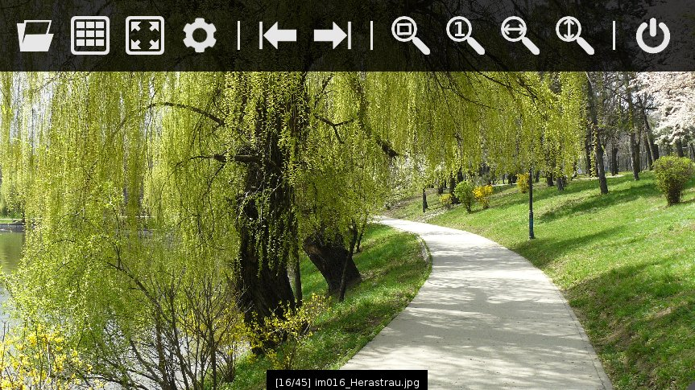

Top Menu

The menu items are (from left to right):
- Open - This option will allow you to select an image to open. Once it is opened, you can use the application to browse through the directory that contains that image.
- Thumbnail View - Shows the thumbnails of all images in the selected folder. See How to use thumnail view for more details.
- Fullscreen - Switches between fullscreen and windowed mode. The same thing as double-tapping the image.
- Configure - Opens the settings window.
- First - Returns to the first image.
- Last - Returns to the last image.
- Zoom to fit - Zooms image so it fits the window.
- Original size - Zooms the image to its original size.
- Rotate counterclockwise - Rotates the image by 90 degrees counterclockwise. This item appears only in singletouch mode.
- Rotate clockwise - Rotates the image by 90 degrees clockwise. This item appears only in singletouch mode.
- Exit - Closes the application.
When the "Show extra icons" setting is enabled, two more icons are shown:
- Fit width - Zooms the image so its width is the same as the width of the screen.
- Fit height - Zooms the image so its height is the same as the height of the screen.
If multitouch is not enabled, a zoom bar will appear on the bottom of the screen, like in the image below. You can use it to zoom the image. Don't forget to zoom back to the minimum value before using the drag gesture to move to the next image.